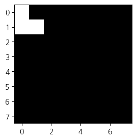

import torch
import torchvision
import matplotlib.pyplot as plt1. imports
plt.rcParams['figure.figsize'] = (4.5, 3.0)2. CNN 핵심 레이어
A. torch.nn.ReLU
B. torch.nn.MaxPool2d
C. torch.nn.Conv2d
Note
입력이 1장의 흑백이미지이고 출력도 1장의 흑백이미지일 경우 컨볼루션 계산과정 요약[1]
- 윈도우생성:
kernel_size= (?,?) 인 윈도우를 만듦- sub-img생성: 입력 이미지에 윈도우를 통과시켜 (?,?) 크기의 sub-img를 만듦.
- 연산: sub-img의 각 원소에
conv.weight의 값을 원소별로 (=element-wisely) 곱하고 결과를 더함. (만약에conv.bias가 있다면 최종결과에 bias를 더함)- 이동&반복: 윈도우를
stride만큼 이동하여 반복. (stride=1 이라면 한칸씩,stride=2 라면 두칸씩 이동)
- (예시1) 재현
“A guide to convolution arithmetic for deep learning” (Dumoulin and Visin 2016) 에 나온 그림재현

[1] 입력shape=(1,1,?,?) 이고 출력의shape=(1,1,?,?)일 경우
img = torch.tensor([
[3,3,2,1,0],
[0,0,1,3,1],
[3,1,2,2,3],
[2,0,0,2,2],
[2,0,0,0,1]
]).reshape(1,1,5,5).float()
imgtensor([[[[3., 3., 2., 1., 0.],
[0., 0., 1., 3., 1.],
[3., 1., 2., 2., 3.],
[2., 0., 0., 2., 2.],
[2., 0., 0., 0., 1.]]]])conv = torch.nn.Conv2d(in_channels=1,out_channels=1,kernel_size=3,bias=False)
conv.weight.data = torch.tensor([[[
[ 0.0, 1.0, 2.0],
[ 2.0, 2.0, 0.0],
[ 0.0, 1.0, 2.0]
]]])conv(img)tensor([[[[12., 12., 17.],
[10., 17., 19.],
[ 9., 6., 14.]]]], grad_fn=<ConvolutionBackward0>)- (예시2) 이동평균
img = torch.arange(1,17).float().reshape(1,1,4,4)
imgtensor([[[[ 1., 2., 3., 4.],
[ 5., 6., 7., 8.],
[ 9., 10., 11., 12.],
[13., 14., 15., 16.]]]])conv = torch.nn.Conv2d(in_channels=1,out_channels=1,kernel_size=2,stride=1,bias=False)
conv.weight.data = conv.weight.data*0 + 1/4
conv.weight.datatensor([[[[0.2500, 0.2500],
[0.2500, 0.2500]]]])conv(img)tensor([[[[ 3.5000, 4.5000, 5.5000],
[ 7.5000, 8.5000, 9.5000],
[11.5000, 12.5000, 13.5000]]]], grad_fn=<ConvolutionBackward0>)- (예시3) 2개의 이미지
개념: (1,1,?,?) \(\to\) (1,1,?,?) 의 conv를 observation 별로 적용
conv에 포함된 파라메터 수는 (1,1,?,?) \(\to\) (1,1,?,?) 인 경우와 (n,1,?,?) \(\to\) (n,1,?,?)인 경우가 동일
imgs = torch.arange(1,33).float().reshape(2,1,4,4)
conv = torch.nn.Conv2d(in_channels=1,out_channels=1,kernel_size=2,stride=1,bias=False)
conv.weight.data = conv.weight.data*0 + 1/4imgstensor([[[[ 1., 2., 3., 4.],
[ 5., 6., 7., 8.],
[ 9., 10., 11., 12.],
[13., 14., 15., 16.]]],
[[[17., 18., 19., 20.],
[21., 22., 23., 24.],
[25., 26., 27., 28.],
[29., 30., 31., 32.]]]])conv(imgs)tensor([[[[ 3.5000, 4.5000, 5.5000],
[ 7.5000, 8.5000, 9.5000],
[11.5000, 12.5000, 13.5000]]],
[[[19.5000, 20.5000, 21.5000],
[23.5000, 24.5000, 25.5000],
[27.5000, 28.5000, 29.5000]]]], grad_fn=<ConvolutionBackward0>)conv.weight.shapetorch.Size([1, 1, 2, 2])- (예시4) 2개의 이미지, 2개의 out_channels
개념: (1,1,?,?) \(\to\) (1,1,?,?) 의 conv를 한번 적용, 그것과 별개로 (1,1,?,?) \(\to\) (1,1,?,?) 인 다른 conv를 적용함. (즉 하나의 observation당 2번 conv변환) 이것을 observation별로 반복
(1,1,?,?) \(\to\) (1,2,?,?) 인 경우는 (1,1,?,?) \(\to\) (1,1,?,?)인 경우보다
conv에 포함된 파라메터 수가 2배 많음그런데 (1,1,?,?) \(\to\) (1,2,?,?) 인 경우와 (n,1,?,?) \(\to\) (n,2,?,?)인 경우는
conv에 포함된 파라메터 수가 같음.따라서 (n,1,?,?) \(\to\) (n,2,?,?) 인 경우는 (1,1,?,?) \(\to\) (1,1,?,?)인 경우보다
conv에 포함된 파라메터 수가 2배 많음
img = torch.arange(1,33).float().reshape(2,1,4,4)
conv = torch.nn.Conv2d(in_channels=1,out_channels=2,kernel_size=2,stride=1,bias=False)imgtensor([[[[ 1., 2., 3., 4.],
[ 5., 6., 7., 8.],
[ 9., 10., 11., 12.],
[13., 14., 15., 16.]]],
[[[17., 18., 19., 20.],
[21., 22., 23., 24.],
[25., 26., 27., 28.],
[29., 30., 31., 32.]]]])conv.weight.data[0] = conv.weight.data[0]*0 +1/4
conv.weight.data[1] = conv.weight.data[0]*0conv(img)tensor([[[[ 3.5000, 4.5000, 5.5000],
[ 7.5000, 8.5000, 9.5000],
[11.5000, 12.5000, 13.5000]],
[[ 0.0000, 0.0000, 0.0000],
[ 0.0000, 0.0000, 0.0000],
[ 0.0000, 0.0000, 0.0000]]],
[[[19.5000, 20.5000, 21.5000],
[23.5000, 24.5000, 25.5000],
[27.5000, 28.5000, 29.5000]],
[[ 0.0000, 0.0000, 0.0000],
[ 0.0000, 0.0000, 0.0000],
[ 0.0000, 0.0000, 0.0000]]]], grad_fn=<ConvolutionBackward0>)conv(img)tensor([[[[ 3.5000, 4.5000, 5.5000],
[ 7.5000, 8.5000, 9.5000],
[11.5000, 12.5000, 13.5000]],
[[ 0.0000, 0.0000, 0.0000],
[ 0.0000, 0.0000, 0.0000],
[ 0.0000, 0.0000, 0.0000]]],
[[[19.5000, 20.5000, 21.5000],
[23.5000, 24.5000, 25.5000],
[27.5000, 28.5000, 29.5000]],
[[ 0.0000, 0.0000, 0.0000],
[ 0.0000, 0.0000, 0.0000],
[ 0.0000, 0.0000, 0.0000]]]], grad_fn=<ConvolutionBackward0>)4. CNN의 학습원리
A. data
- 아래의 4개의 이미지
img0 = torch.tensor([
[0.1, 0.1, 0.1, 0.1, 0.1, 0.1, 0.1, 0.1, 0.0, 0.0, 0.0, 0.0, 0.0, 0.0, 0.0, 0.0],
[0.1, 0.1, 0.1, 0.1, 0.1, 0.1, 0.1, 0.1, 0.0, 0.0, 0.0, 0.0, 0.0, 0.0, 0.0, 0.0],
[0.1, 0.1, 0.1, 0.1, 0.1, 0.1, 0.1, 0.1, 0.0, 0.0, 0.0, 0.0, 0.0, 0.0, 0.0, 0.0],
[0.1, 0.1, 0.1, 0.1, 0.1, 0.1, 0.1, 0.1, 0.0, 0.0, 0.0, 0.0, 0.0, 0.0, 0.0, 0.0],
[0.1, 0.1, 0.1, 0.1, 0.1, 0.1, 0.1, 0.1, 0.0, 0.0, 0.0, 0.0, 0.0, 0.0, 0.0, 0.0],
[0.1, 0.1, 0.1, 0.1, 0.1, 0.1, 0.1, 0.1, 0.0, 0.0, 0.0, 0.0, 0.0, 0.0, 0.0, 0.0],
[0.1, 0.1, 0.1, 0.1, 0.1, 0.1, 0.1, 0.1, 0.0, 0.0, 0.0, 0.0, 0.0, 0.0, 0.0, 0.0],
[0.1, 0.1, 0.1, 0.1, 0.1, 0.1, 0.1, 0.1, 0.0, 0.0, 0.0, 0.0, 0.0, 0.0, 0.0, 0.0],
[0.1, 0.1, 0.1, 0.1, 0.1, 0.1, 0.1, 0.1, 0.0, 0.0, 0.0, 0.0, 0.0, 0.0, 0.0, 0.0],
[0.1, 0.1, 0.1, 0.1, 0.1, 0.1, 0.1, 0.1, 0.0, 0.0, 0.0, 0.0, 0.0, 0.0, 0.0, 0.0],
[0.1, 0.1, 0.1, 0.1, 0.1, 0.1, 0.1, 0.1, 0.0, 0.0, 0.0, 0.0, 0.0, 0.0, 0.0, 0.0],
[0.1, 0.1, 0.1, 0.1, 0.1, 0.1, 0.1, 0.1, 0.0, 0.0, 0.0, 0.0, 0.0, 0.0, 0.0, 0.0],
[0.1, 0.1, 0.1, 0.1, 0.1, 0.1, 0.1, 0.1, 0.0, 0.0, 0.0, 0.0, 0.0, 0.0, 0.0, 0.0],
[0.1, 0.1, 0.1, 0.1, 0.1, 0.1, 0.1, 0.1, 0.0, 0.0, 0.0, 0.0, 0.0, 0.0, 0.0, 0.0],
[0.1, 0.1, 0.1, 0.1, 0.1, 0.1, 0.1, 0.1, 0.0, 0.0, 0.0, 0.0, 0.0, 0.0, 0.0, 0.0],
[0.1, 0.1, 0.1, 0.1, 0.1, 0.1, 0.1, 0.1, 0.0, 0.0, 0.0, 0.0, 0.0, 0.0, 0.0, 0.0]
]).reshape(1, 1, 16, 16)
img1 = 0.1-torch.einsum('nchw->ncwh', img0.clone())
img2 = torch.zeros((1, 1, 16, 16))
for i in range(16):
for j in range(16):
if j <= i: # 대각선 아래 삼각형
img2[0, 0, i, j] = 0.1
# 빈 이미지
img3 = torch.zeros((1, 1, 16, 16))
block_size = 2
# 블록 단위로 채우기
for i in range(0, 16, block_size):
for j in range(0, 16, block_size):
if ((i // block_size) + (j // block_size)) % 2 == 0:
img3[0, 0, i:i+block_size, j:j+block_size] = 0.1- squeeze() 차원이 1인 것을 없애줌
fig, axs = plt.subplots(2,2)
fig.set_figheight(8)
fig.set_figwidth(8)
axs[0][0].imshow(img0.squeeze(),cmap="gray")
axs[0][1].imshow(img1.squeeze(),cmap="gray")
axs[1][0].imshow(img2.squeeze(),cmap="gray")
axs[1][1].imshow(img3.squeeze(),cmap="gray")imgs = torch.concat([img0,img1,img2,img3],axis=0)
imgs.shapetorch.Size([4, 1, 16, 16])B. vertical edge
v_conv = torch.nn.Conv2d(
in_channels=1,
out_channels=1,
kernel_size=4,
bias=False
)v_conv.weight.data = torch.tensor([[[
[ 0, 0, 0, 0],
[ 0, 1.0, -1.0, 0],
[0, 1.0, -1.0, 0],
[ 0, 0, 0, 0]
]]])- v_conv는 좌우방향의 픽셀 변화, 즉 수직 방향의 엣지를 감지하는데 적절
fig, axs = plt.subplots(2,2)
fig.set_figheight(8)
fig.set_figwidth(8)
axs[0][0].imshow(v_conv(imgs)[0].squeeze().data,cmap="gray")
axs[0][1].imshow(v_conv(imgs)[1].squeeze().data,cmap="gray")
axs[1][0].imshow(v_conv(imgs)[2].squeeze().data,cmap="gray")
axs[1][1].imshow(v_conv(imgs)[3].squeeze().data,cmap="gray")C. horizontal edge
h_conv = torch.nn.Conv2d(
in_channels=1,
out_channels=1,
kernel_size=4,
bias=False
)h_conv.weight.data = torch.tensor([[[
[ 0, 0, 0, 0],
[ 0, -1.0, -1.0, 0],
[0, 1.0, 1.0, 0],
[ 0, 0, 0, 0]
]]])- h_conv는 위아래 방향의 픽셀 변화, 즉 수평 방향의 엣지를 감지하는데 적절
fig, axs = plt.subplots(2,2)
fig.set_figheight(8)
fig.set_figwidth(8)
axs[0][0].imshow(h_conv(imgs)[0].squeeze().data,cmap="gray")
axs[0][1].imshow(h_conv(imgs)[1].squeeze().data,cmap="gray")
axs[1][0].imshow(h_conv(imgs)[2].squeeze().data,cmap="gray")
axs[1][1].imshow(h_conv(imgs)[3].squeeze().data,cmap="gray")_files/figure-html/cell-27-output-1.png)
D. 이동평균
m_conv = torch.nn.Conv2d(
in_channels=1,
out_channels=1,
kernel_size=4,
)
m_conv.weight.data = m_conv.weight.data*0 + 1/16
m_conv.bias.data = m_conv.bias.data*0 - 0.05fig, axs = plt.subplots(2,2)
fig.set_figheight(8)
fig.set_figwidth(8)
axs[0][0].imshow(m_conv(imgs)[0].squeeze().data,cmap="gray")
axs[0][1].imshow(m_conv(imgs)[1].squeeze().data,cmap="gray")
axs[1][0].imshow(m_conv(imgs)[2].squeeze().data,cmap="gray")
axs[1][1].imshow(m_conv(imgs)[3].squeeze().data,cmap="gray")E. (B,C,D) + relu + mp
relu = torch.nn.ReLU()
mp = torch.nn.MaxPool2d(kernel_size=13)mp(relu(v_conv(imgs)))tensor([[[[0.2000]]],
[[[0.0000]]],
[[[0.1000]]],
[[[0.2000]]]], grad_fn=<MaxPool2DWithIndicesBackward0>)mp(relu(h_conv(imgs)))tensor([[[[0.0000]]],
[[[0.2000]]],
[[[0.1000]]],
[[[0.2000]]]], grad_fn=<MaxPool2DWithIndicesBackward0>)mp(relu(m_conv(imgs)))tensor([[[[5.0000e-02]]],
[[[5.0000e-02]]],
[[[5.0000e-02]]],
[[[9.3132e-10]]]], grad_fn=<MaxPool2DWithIndicesBackward0>)F. 구조
net = torch.nn.Sequential(
torch.nn.Conv2d(in_channels=1,out_channels=3,kernel_size=4),
torch.nn.ReLU(),
torch.nn.MaxPool2d(kernel_size=13),
torch.nn.Flatten()
)
net[0].weight.data = torch.concat(
[v_conv.weight.data,
h_conv.weight.data,
m_conv.weight.data],axis=0)
net[0].bias.data = torch.tensor([0.0,0.0, -0.05])plt.matshow(net(imgs).data,cmap="gray")net(imgs).shapetorch.Size([4, 3])출력은 (n,3)으로 정리되어서 나온다. 이 시점부터는 더 이상 이미지가 입력이라고 생각하지 않아도 되고, 단순히 (n, 3) 크기의 숫자 데이터가 입력으로 주어진 것처럼 보면 된다. 즉 이제부터는 이 (n,3) 데이터를 입력으로 받는 신경망을 설계하면 된다.
G. mp의 역할?
- 샘플이미지
img = torch.zeros((1, 1, 16, 16))
triangle_size = 4
for i in range(triangle_size):
for j in range(triangle_size):
if j <= i: # 아래 방향 직각삼각형 (왼쪽 위 꼭짓점 기준)
img[0, 0, i, j] = 1.0plt.imshow(img.squeeze(),cmap="gray")- mp 1회
mp = torch.nn.MaxPool2d(kernel_size=2)
plt.imshow(mp(img).squeeze(),cmap="gray")
- mp 2~4회
mp = torch.nn.MaxPool2d(kernel_size=2)
plt.imshow(mp(mp(img)).squeeze(),cmap="gray")mp = torch.nn.MaxPool2d(kernel_size=2)
plt.imshow(mp(mp(mp(img))).squeeze(),cmap="gray")- maxpooling은 이미지를 “캐리커처화” 한다고 비유할 수 있음. 디테일은 버리고, 중요한 특징만 뽑아서 과장되게 요약한다.
4. FashionMNIST
- CNN
- \(\to\) 2d // flatten(conv(특징) - relu(특징추가) - maxpooling(요약))
- \(\to\) 1d // 단순신경망(그냥 펼친걸로 신경망)
- 데이터
train_dataset = torchvision.datasets.FashionMNIST(root='./data', train=True, download=False)
train_dataset = torch.utils.data.Subset(train_dataset, range(5000))
to_tensor = torchvision.transforms.ToTensor()
X = torch.stack([to_tensor(img) for img, lbl in train_dataset]).to("cuda:0")
y = torch.tensor([lbl for img, lbl in train_dataset])
y = torch.nn.functional.one_hot(y).float().to("cuda:0")- 2d를 처리하고 flatten하는 네트워크
net1 = torch.nn.Sequential(
torch.nn.Conv2d(in_channels=1,out_channels=16,kernel_size=5),
torch.nn.ReLU(),
torch.nn.MaxPool2d(kernel_size=2),
torch.nn.Flatten()
).to("cuda:0")net1(X).shapetorch.Size([5000, 2304])출력은 (n,2304)으로 정리되어서 나온다. 이 시점부터는 더 이상 이미지가 입력이라고 생각하지 않아도 되고, 단순히 (n, 2304) 크기의 숫자 데이터가 입력으로 주어진 것처럼 보면 된다. 즉 이제부터는 이 (n,2304) 데이터를 입력으로 받는 신경망을 설계하면 된다.
- 1d를 처리하는 네트워크
net2= torch.nn.Sequential(
torch.nn.Linear(2304,10),
).to("cuda:0")- 두 네트워크를 결합
net = torch.nn.Sequential(
net1,
net2
)
net(X).shapetorch.Size([5000, 10])- 최종적인 코드
net = torch.nn.Sequential(
net1,
net2
)
loss_fn = torch.nn.CrossEntropyLoss()
optimizr=torch.optim.Adam(net.parameters())
#---#
for epoc in range(100):
#1
netout = net(X)
#2
loss = loss_fn(netout,y)
#3
loss.backward()
#4
optimizr.step()
optimizr.zero_grad()(net(X).argmax(axis=1) == y.argmax(axis=1)).float().mean()tensor(0.8806, device='cuda:0')